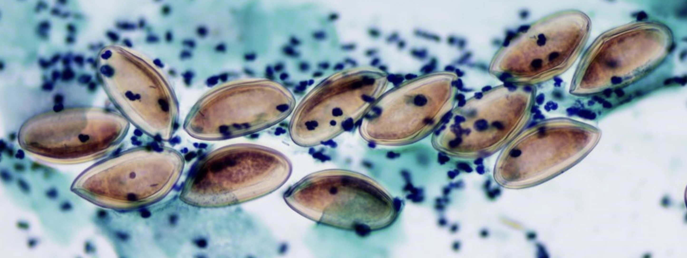

Quiénes Somos
Somos una empresa dedicada al estudio histopatológico de las alteraciones estructurales y funcionales
de tejidos con fines de diagnóstico y de investigación.
Para abordar estos desafíos, utilizamos un amplio rango de técnicas, que incluyen la histoquímica, la
inmunohistoquímica, y técnicas moleculares.
Nuestro grupo interdisciplinario incluye patólogos, biólogos, y tecnólogos.